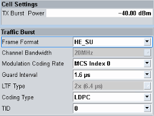
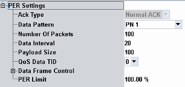
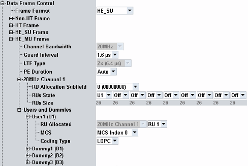

This section describes the settings in the PER view and the settings in the PER configuration dialog.
The "Config" hotkey opens either the PER configuration dialog or the configuration dialog of the signaling application, depending on which softkey is active.


Same setting as in the signaling configuration dialog, see "RF TX Burst Power".
Configures the downlink data frames. The supported values depend on the selected standard.
Configure the parameters top-down. The "Modulation Coding Rate" parameter offers only values that are compatible to the other settings.
- For "TID" setting, refer to "QoS Data TID Settings".
- For the description of remaining parameters, refer to "Data Frame Control".
Selects an evaluation scheme for the PER measurement. Currently, only the standard frame acknowledgment is supported.
Remote command:- PN<no>: Pseudo-noise sequences of different length
- Pseudo-random bit sequence
- All zero: 00000…
- All one: 11111…
- Pattern 01: 010101…
- Pattern 10: 101010…
Specifies the number of user data MAC packets to be transmitted to the DUT. The PER view displays a progress bar, indicating this setting and the number of already transmitted packets. The PER measurement is stopped when the specified number of packets has been transmitted.
Remote command:Specifies the time interval (in units of 1024 µs) between data packet transmissions for the PER measurement.
Remote command:Defines the payload size (in bytes) of the transmitted MAC data packets.
Remote command:Sets the TID value for PER measurements.
Remote command:
All settings are also configurable via the main configuration dialog. Refer to the "Data Frame Control Settings".
Configures the downlink data frames. This setting is a critical parameter for reaching the maximum downlink throughput. The supported values depend on the selected standard.
Configure the parameters top-down. The "Modulation Coding Rate" parameter offers only values that are compatible to the other settings.
Remote command:Selects the modulation/coding rate of the transmitted data frames. The available values depend on the selected standard. The settings are configurable per frame format.
If you want to set a user-defined value, configure the parameters top-down.
- For "Channel Bandwith", refer to "Operating Channel Width".
- "Rate": The selected rate is only used for packet error rate (PER) tests.
- "Guard Interval":
– Short or long guard interval for legacy (up to IEEE 802.11ac) – 0.8 μs, 1.6 μs, and 3.2 μs guard interval durations for IEEE 802.11ax - "LTF Type": 1x LTF, 2x LTF or 4x LTF
- "PE Duration": value of packet extension (PE) field to provide additional receive processing time at the end of the HE PPDU. Automatic setting is based on the reported DUTs capabilities.
Configures arrangement and number of allocations.
- "RU Allocation Subfield": sets 8-bit indices for resource unit (RU) allocation to specify the number of RUs and their size. Refer to IEEE P802.11ax, table 28-23, RU allocation signaling.
- "RUs State": disables or enables and selects user data to be transmitted in particular RU
- "RUs Size": specifies the number of RU tones; 26 means 26-tones RU. RUs sizes are selected via "RU Allocation Subfield"
Configures payload. One "User" must be mapped to one RU within a channel. The remaining RUs can be disabled or you can allocate a "Dummy" as user data.
Modulation and coding scheme can be assigned to each user data type ("User" and "Dummy").
Coding type can be assigned only to the user data type "User".
Remote command:Defines the upper limit for the measured packet error rate.
Remote command: